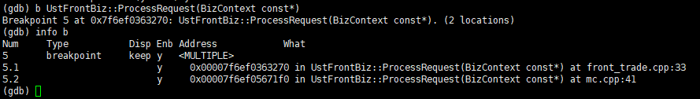

基本调试：编译时加上 -g，添加调试信息
断点操作：
设置断点：
b function：在函数function的入口处设置断点，C++中可以使用class::function或function(type,type)来指定函数名
b line_number：在当前活动源代码文件的line_number处设置断点
b filename:line_number：在源代码文件filename的line_number处设置断点，文件可以使用相对或者绝对路径
b filename:function：在文件filename中的function入口处设置断点。会在所有重载函数或同名静态函数上设置断点
b *address在程序运行的内存地址处停住。
条件断点：break break-args if (condition )
对正常断点设置条件以将他们转变为条件断点，使用cond【ition】，如cond 3 i==3，如果要删除条件但保持该断点，只要输入cond 3即可（这个3是断点的序号，可以用info b查看），在程序运行到断点处设置
临时断点tb【reak】的命令设置和break相同，有效性只到第一次到达指定行为止
如果是虚函数，如下打断点会出现多个：

p/x var # 以十六进制显示
其他常用的格式如c表示字符，s表示字符串，f表示浮点
commands breakpoint-number
silent
commands // 用新行分隔的任何有效GDB命令
. . .
end
检查和设置变量：
// 代码为：
int *a = new int[32];
a[3] = 10;
gdb: p *a@3
显示：$1={0,0,10}
GDB还允许适当的时候使用强制类型转换
GDB中的表达式：
GDB变量
程序中任何在作用域内的变量
任何种类的字符串，数值或字符常量
预处理宏
条件，函数调用，类型强制转换和所用语言的运算符
在GDB中设置变量：——有什么用还没探索出来
GDB自己的变量
值历史：诸如 $1, $2等
方便变量——？也没看懂
handle命令告诉gdb不要停止或发出警告信息
程序崩溃处理：
多线程调试：
info threads:给出当前所有线程的信息，"*"表示当前位于哪个线程；
bt查看堆栈
thread n，n为info threads中线程前面的编号，切换到n线程
break m thread n：当线程n到达源码第88行时停止
break xx.cpp:123 thread all：在所有线程中相应的行上设置断点
break m thread n if x==y：当钱程n到达源码第m行，并且变量x和y相等时停止执行
thread apply ID1 ID2 command：让线程ID1和ID2执行GDB命令command
thread apply all command：让所有被调试线程执行GDB命令command
set scheduler-locking off|on|step：使用step或continue命令调试当前被调试线程的时候其他线程也是同时执行的。
怎样知道其他线程在干什么？thread x切换到其他线程然后执行bt查看该线程的栈
其他调试：
.gdbinit文件：放在用户主目录下，GDB启动时自动加载
define <command> ## 调用该宏命令执行
<command>
end
document <command> ## help command可以显示出来
<help text>
end
其他工具：
调试总结：
问题总结：
怎么显示list中的内容？
如果想一直监视而不是每次进入堆栈就watch一次怎么操作？
gdb调试多线程
带参数的进程怎么调试
GDB不退出重新编译后run报段错误，是什么原因？
怎样用b一次打多个断点？
简写汇总：
break：b；delete：d；continue：c；finish：fin；until：u；print：p；backtrace：bt
GDB调试：
Linux中共提供了三个函数用于打印调用堆栈：
/*
* 函数说明： 取得当前函数的调用堆栈
* 参数：
* buffer：用于存储函数地址的数组
* size：buffer数组的长度
* 返回值：
* 存储到数组中的函数个数
*/
int backtrace(void **buffer, int size);
/*
*
* 函数说明：将一组函数地址转换为字符串
* 参数:
* buffer: 经由backtrace得到的函数地址
* size: buffer数组的长度
* 返回值:
* 函数在系统中对应用字符串
*/
char **backtrace_symbols(void *const *buffer, int size);
/*
* 函数说明：将一组函数地址转换为字符串
* 参数:
* buffer: 经由backtrace得到的函数地址
* size: buffer数组的长度
* fd: 输出结果文件描述符
*/
void backtrace_symbols_fd(void *const *buffer, int size, int fd);